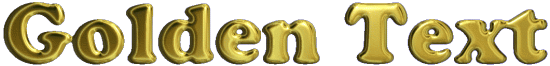
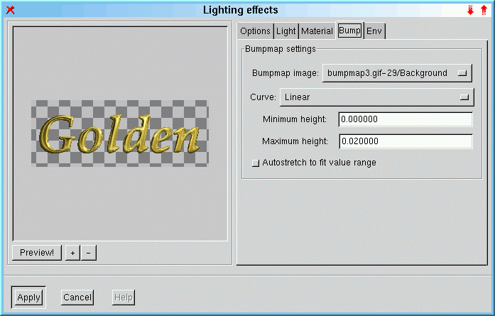
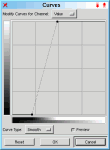
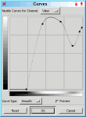
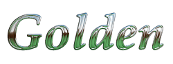

Doesn't the title look really valuable? To reproduce this effect you need the incredible "Lighting"-Plugin, created by Tom Bech and Federico Mena Quintero. It is not in the standard gimp-1.0 distribution, you have to install it yourself. It can be found at <Image> Filters -> Light Effects -> Lighting Effects. This Plugin does a very good Bump-Mapping. Additionally it can map an enviroment-map to the image.
The trick is to use a good enviroment-map. I created it with <Image> Filters -> Render -> Solid Noise (X/Y-Size: 2.8, Detail: 1, Tileable). It is important for a good effect to get different grays in the top right corner. Then I did a <Image> Image -> Colors -> Auto-Stretch Contrast and a <Image> Filters -> Blur -> Gaussian Blur (IIR) with a radius of 5 to get the full range of gray. Then select the "Golden"-Gradient in <Image> Dialogs -> Gradient Editor... and <Image> Filters -> Colors -> Gradient Map it to the image.
The next step is to create a bumpmap for the text. Open a new grayscale image in the desired size, fill it black and paint the white text on it. To get a smooth transition do a Gaussian Blur on it.

Then open a new RGB-Image with exactly the same size and start the Lighting-Plugin. Select the "Enviroment-map"- and "Bumpmap"-Toggles and select the images in the appropriate notebook-pages. I prefer a lower value in the "Maximum height" Bumpmap option. I think 0.02 is good in most cases.
This is the result after a click on Apply. There is room for Improvements. Since the Lighting-Plugin doesn't support antialiasing yet it is a good idea to render the image in the double size and scale it down for the final image. Some other neat tricks can be found in the next part.




At the Bumpmap-Options you can select different between four different Curves for Bumpmapping.
So you can select between a linear, spherical, logarithmic and a sinusoidial Bumpmap.
There is a much more flexible way to specify the surface of the Bumpmap. The Key is the
<Image> Image -> Colors -> Curves-Dialog.
Create the text and blur it with a wider radius. Then select the Curves-Dialog and modify the text-profile. A little Blur (Radius 2)
makes the Bumpmap a little bit smoother. See the examples above.
Another possibility is the use of a different gradient.

To get Chrome-like effects try to use different enviroment-maps. Look at these examples.
That's it :-)
The original tutorial can be found here.